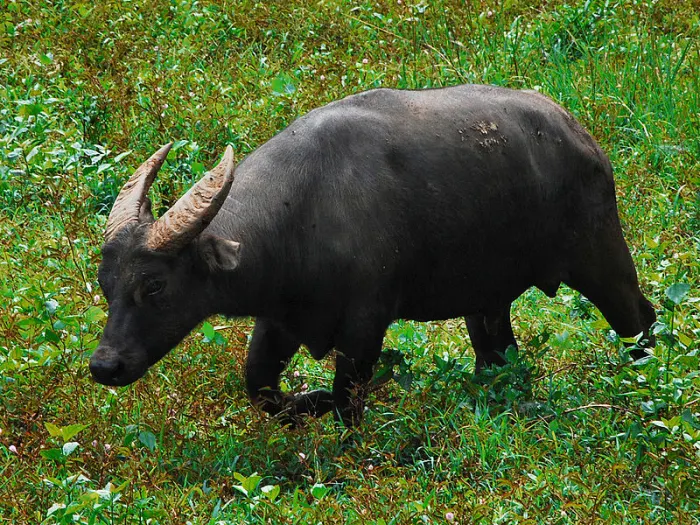

The Department of Environment and Natural Resources issued an administrative order in 2007 that produced a nationwide list of threatened plant species, showing that 99 species are critically endangered, 187 endangered, 176 vulnerable, and 64 threatened.
1. Philippine Eagle (Pithecophaga jefferyi)

Also called the monkey-eating eagle, the Philippine eagle is native to the southern Philippines. It is characterized by a brown and white feather pattern and bushy crest and is believed to be one of the largest and most powerful birds on Earth.A full-grown adult can grow to as big as four feet (ft) tall and can weigh as much as nine kilograms (kg).
Learn More →2. Tamaraw (Bubalus mindorensis)
Also known as the Mindoro dwarf buffalo, the Tamaraw is the only known bovine indigenous to the Philippines. Until the 20th century, the original habitat of this species was essentially intact and unharmed. They were once found all over Mindoro Island, from the plains up to the mountains. But now the population has been reduced to about 200, with many being carefully bred in captivity.
Learn More →3. Walden's Hornbill (Aceros waldeni)

Locally called a Kalaw, it is also known as the Visayan Wrinkled Hornbill. The Kalaw is endemic to the Philippine islands of Panay and Negros. However, it can also be found in other regions of the country, such as Zamboanga del Norte in Mindanao.
Learn More →4. Hawksbill Sea Turtle (Eretmochelys imbricate)

This sea turtle is commonly known among the locals in the Philippines as the Pawikan. This turtle species can also be found in other parts of the world. The Hawksbill sea turtle shares many features with other types of marine turtle species.
Learn More →5. The Philippine Tarsier (Carlito syrichta)

This small primate is another endangered species endemic to the Philippine islands. This species was once widespread throughout Southeast Asia. Fossils of these animals were also found in North America and Europe. Tarsiers today can also be found in other Asian countries such as Indonesia and Malaysia.
Learn More →